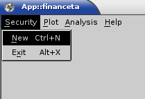
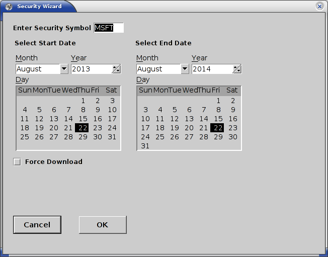
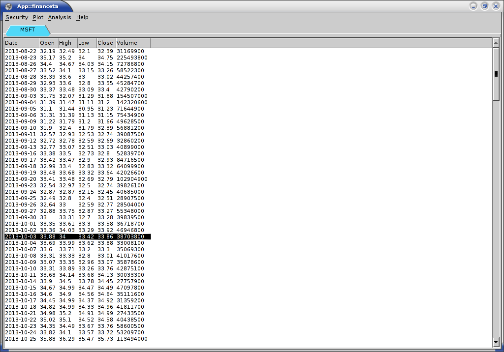
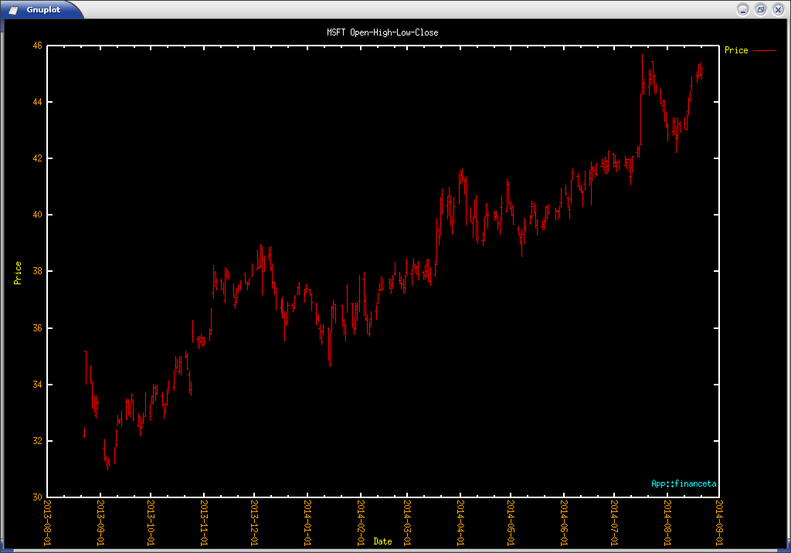

Using App::financeta
Starting the Application
We hope that you have successfully installed the application as outlined here. If you have installed it from CPAN, you need to start the application like this:
$ financeta
If you have installed the software from Github, you are running it in developer mode and you should be running it like this:
$ perl -Mblib ./bin/financeta
Please refer to the install page for more details on installing the application from Github and CPAN.
On Linux and other Unix variants, you need X-server running to view the GUI. On Mac OS X, if you have installed Gnuplot, you will already have X-server installed and the application should automatically start it up.
Selecting a Security
When we refer to the word security, we mean a company stock. However, as time progresses and if data is freely available, we will be adding options and futures to the mix as well. Hence security is a term that groups all of these under one.
Using the menu option 'Security' followed by 'New' as shown in the image below, start the 'Security Wizard' dialog. Enter a valid stock symbol such as 'MSFT' in the 'Enter Security Symbol' text box, select the start and end dates for which you want data for (by default this is set to one year back from today) and hit the 'OK' button.
You will see a new tab opens with the name of the symbol you entered, which is 'MSFT' in this case and all the stock data listed in tabular form. You will also see a plot drawn in Gnuplot in a separate window and started up as shown.
The steps are outlined as follows:
- Select 'New' from the 'Security' menu option 
- Enter a valid stock symbol and date range in the 'Security Wizard' such as 'MSFT' 
- View the retrieved data in a tab titled 'MSFT' or the symbol you have chosen 
- View the open-high-low-close (OHLC) bar plot in Gnuplot that has been started by App::financeta 